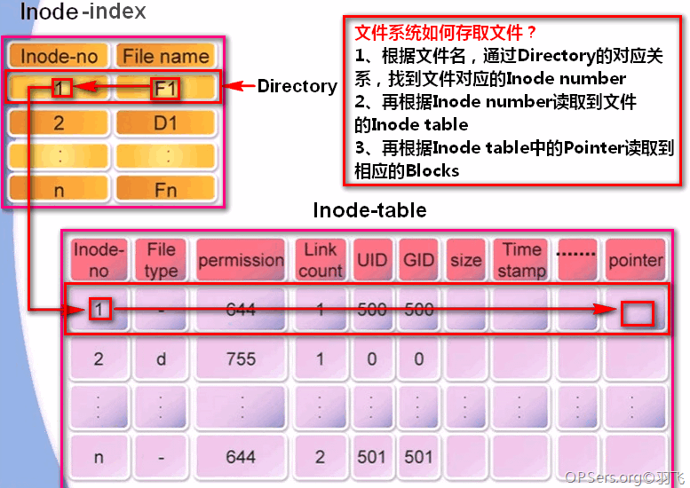

第2节：EXT3文件系统存取文件

上面提到了在Ubuntu系统中每个文件都对应着一个inode，而文件系统正是通过inode来实现对文件的存取。每当一个文件被创建时，就会创建一个inode来记录该文件的信息，且每个inode都有唯一的编号。当系统中没有可用的inode编号时，那么用户就无法创建新的文件。
系统对文件的存取过程如下：
1、根据文件名，通过Directory里的对应关系，找到文件对应的Inode number
2、再根据inode number读取到文件的inode table
3、再根据inode table中的Pointer读取到相应的Blocks，进而获得文件的物理地址